Sobre el proyecto
Información general del proyecto, que debería ser lo mismo que la descripción breve de “Sobre el Proyecto, que es a donde lleva el siguiente enlace.
Más información >Datos abiertos y software libre
¿Quiénes somos?


Con el apoyo de:
Conocé otros proyectos de DATA:
